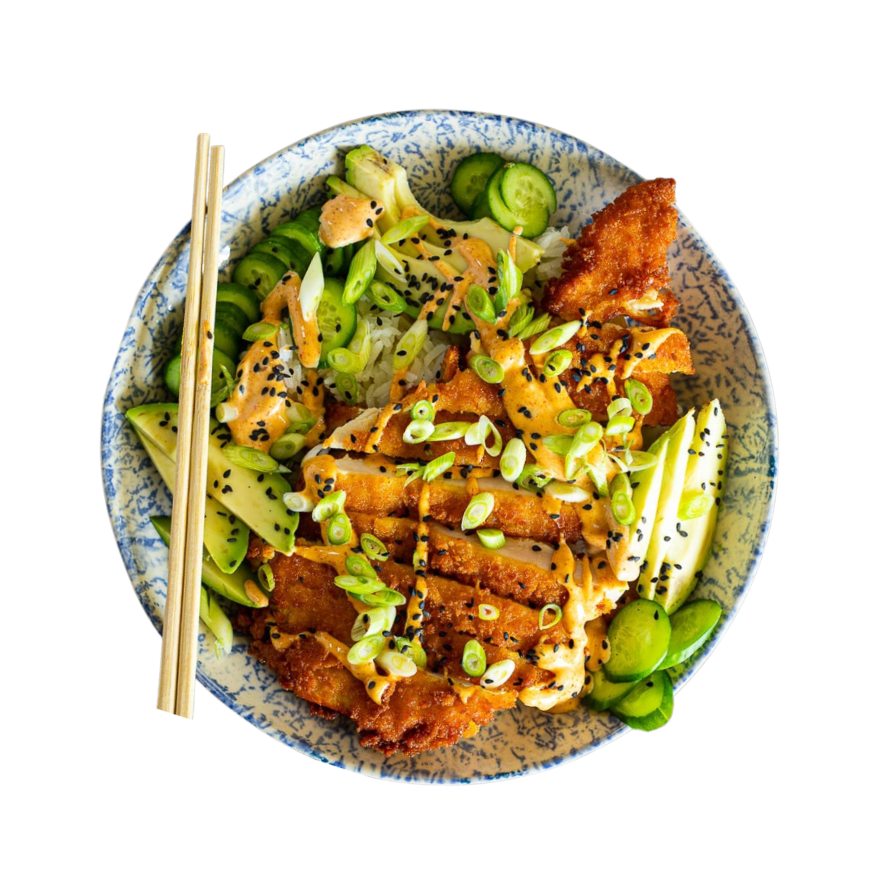

˙⋆✮Recipe✮⋆˙

Bahan Makanan
- 100 gr dada ayam fillet
- Tepung panir
- Telur
- 1 sdt kaldu bubuk
- Minyak goreng
- 1 buah wortel
- 2 bungkah selada
- Saus caesar salad
Gizi pada Salad
- Kalori: ±250-300 kkal
- Protein: ±2–3 g
- Karbohidrat: ±10–12 g
- Lemak: ±22-25 g
- Serat: ±5 g
- Gula: ±2-3 g
- Sodium: ±200-300 mg
Gizi pada Katsu
- Kalori: ±350-400 kkal
- Protein: ±20-25 g
- Karbohidrat: ±20-25 g
- Lemak: ±18-22 g
- Serat: ±1-2 g
- Sodium: ±700-900 mg
Bahan Makanan
- Kandungan protein tinggi untuk membangun otot
- Serat untuk pencernaan sehat
- Vitamin dan mineral penting untuk fungsi tubuh
- Selada dan wortel kaya akan vitamin A, C, K serta folat dan vitamin E, A, serta K